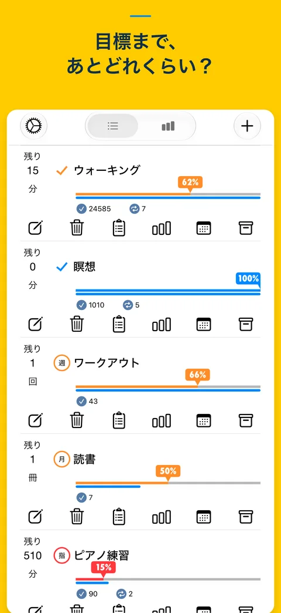
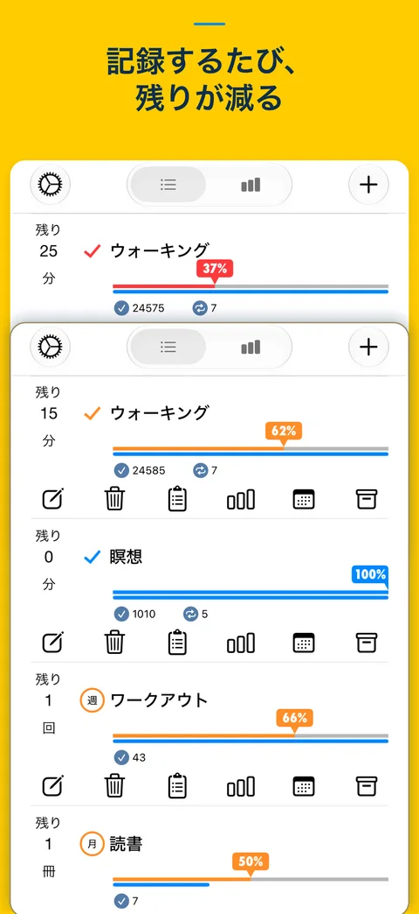
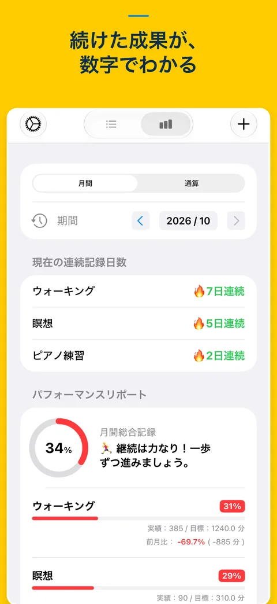
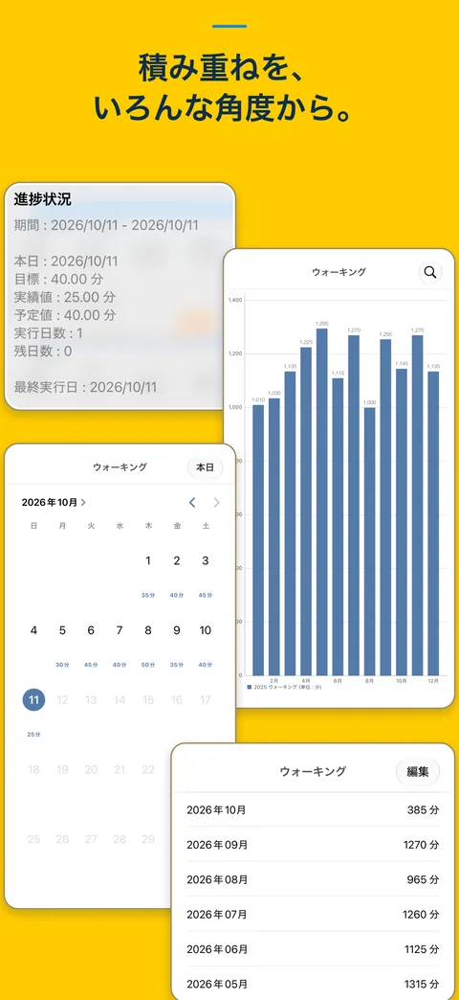

目標は自分のペースでGoals at your own pace
日・週・月の目標や期間を決めた目標に対応。歩く時間、読む冊数、練習の回数など、自分に合った単位で記録できます。Choose daily, weekly, monthly, or custom-period goals. Record walking minutes, books read, or practice sessions in the units that suit you.
Remaining
ひとつ記録して目標へ一歩One entry at a time. A little closer to your goal.
記録するたび、残りの数字が減り、進捗バーが伸びる。習慣づくりや数値目標への取り組みを、目に見える手応えに。Log your activity and watch the remaining amount count down as your progress bar grows. See the steps you’re taking toward your habits and measurable goals.
28秒の動画で使い方を見る · 音声なしSee it in action in 28 seconds · No sound
日・週・月の目標や期間を決めた目標に対応。歩く時間、読む冊数、練習の回数など、自分に合った単位で記録できます。Choose daily, weekly, monthly, or custom-period goals. Record walking minutes, books read, or practice sessions in the units that suit you.
数値を入力して記録。よく使う値はプリセットにして、スワイプから追加できます。小数点第2位までの入力にも対応しています。Enter a number to log your activity. Add frequently used values with swipe presets. Values can include up to two decimal places.
カレンダーや月別グラフ、ダッシュボードで実績を確認。連続記録、通知、ホーム画面・ロック画面ウィジェットで継続を支えます。Review your activity in calendars, monthly charts, and the Dashboard. Recording streaks, reminders, and Home Screen or Lock Screen widgets help you stay on track.
一覧から毎日の記録、これまでの積み重ねまでFrom today’s entries to the progress you’ve made over time



